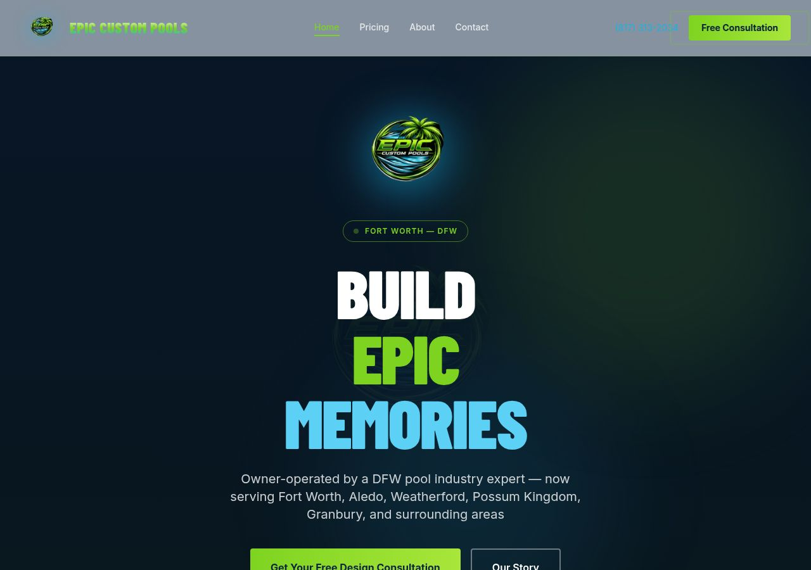

Fort Worth, TX

Sentence headlines get skimmed and forgotten. Three single words hit the brand colours — white, lime-green, teal — before the visitor reads a single word of copy. The stacked treatment uses ~108px type, making the page feel like a premium brand rather than a contractor listing. Research consistently shows that emotional first impressions (formed in <50ms) drive trust and time-on-page more than any body copy.
The marquee does two things at once: it bridges the visual gap between the dark hero and the white trust bar (so the transition doesn't feel abrupt), and it passively drills in key information — phone number, services, city names — without asking the visitor to stop and read. Motion also draws the eye downward, reducing bounce at the fold.
Hard rectangular cuts between coloured sections make a page feel like a stack of disconnected boxes — the design equivalent of a PowerPoint deck. Wave and tilt dividers carry the eye from one section to the next with forward momentum. This is a well-established pattern in premium service-business websites because it signals craft and intentionality, which is exactly what a high-ticket ($80k–$250k) pool contractor needs to convey.
gray-50
white
slate-50
gray-100
white
slate-100
When alternating section backgrounds are too close in value, a long-scroll page feels like a single undifferentiated wall of content. The small contrast bump — just one Tailwind step — creates a clear visual rhythm that tells the visitor "you've arrived in a new section" without any headline needing to do that work. It also makes cards and UI elements inside sections pop more against their backgrounds.
The old order asked visitors to fill out a form before they'd been sold on the brand. The CTA banner — with its "Every great backyard starts with a conversation" headline — is an emotional close, not a functional one. It should appear when the visitor's intent is peaked (right after seeing what you build), not buried at the bottom where most people never arrive. The lead form then waits at the very end for visitors who've read everything and are ready to commit — exactly the visitors most likely to convert.